Support for native text rendering
The Bramble plugin provides support for native text rendering for the core Swing components. When this plugin is in the runtime classpath, the texts on the vast majority of core Swing component will be painted with the native OS calls (via usage of SWT).
The following screenshot shows a sample application running under Windows Vista and JDK 6.0, using the default OS font (Segoe UI, 12 pixels):

Here is the same application running under the Bramble plugin (native text rendering):
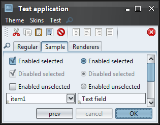Here is another screenshot that shows the default and native rendering of text components (note the rendering of digits). The first and second row use the default AWT rendering, while the third and fourth row use the native rendering:

To use the Bramble plugin, you will need the matching SWT distribution. This can be downloaded from the SWT main page. Recommended version is 3.3. To use the plugin in the WebStart environment, use the resources JNLP tag and sign the SWT jar if necessary.
Bramble plugin provide support for all core Swing components with the following exclusions
- Non-plain text components, including text panes and editor panes.
- HTML text.
- itled borders.
The text on all these components (including HTML) is painted with the default core AWT text font rasterizer.
Support for colorization
The new SubstanceLookAndFeel.COLORIZATION_FACTOR client property provides colorization support for all core Swing components. Here is a screenshot of setting this property to value of 0.5 (50 percent colorization) on a few controls that have custom background and foreground colors:
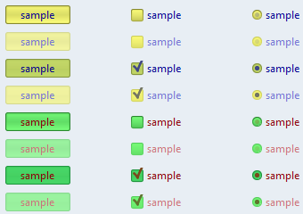Colorization applied to text components:
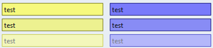And a scroll pane with yellow background (propagating to the horizontal scroll bar) and green background on the vertical scroll bar:
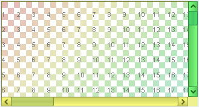Colorization applied to menu items:

Font policy for KDE desktops
The new default KDE font policy automatically picks up the font style and size that match the current desktop settings. Here is a screenshot of a test application running under KDE with default font settings (10 points, 96 DPI setting):
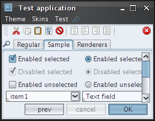and here is the same application, running under 120DPI, using font size of 10 except for menus which are configured to use italic 8:
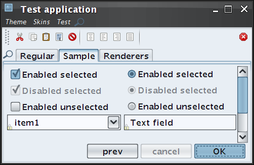New visuals for combobox and spinner buttons
Combo boxes and spinners have more streamlined visuals of arrow buttons, removing visual noise around the button area. Here is a screenshot of a few combo boxes under release 4.1:
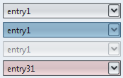The same combo boxes under release 4.2 (note that the last combo box uses the FLAT_PROPERTY to provide a flat default appearance):
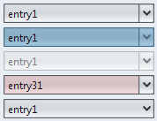Here is how the spinner control looked like in release 4.1:
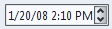And here is how it looks in release 4.2:
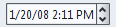New visuals for some skins
The Office Blue 2007 now uses a translucent theme for disabled controls. Under this theme, the disabled controls are blending better with the background, drawing less attention away from enabled and active controls. Here is a screenshot of Office Blue 2007 skin in release 4.1 (the bottom "Cancel" button and the middle row are disabled):
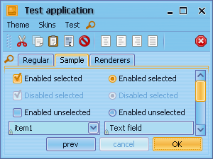The same application under release 4.2 and the new translucent disabled theme:
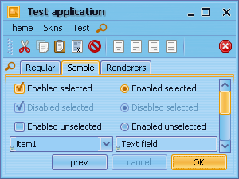The Raven Graphite and Raven Graphite Glass skins use a translucent theme for disabled controls as well. In addition, the painting of check marks on check boxes and radio buttons (enabled and disabled) has been reworked as well to provide more streamlined and consistent appearance. Here are screenshots of Raven Graphite and Raven Graphite Glass skins in release 4.1 (note the check marks and disabled controls):
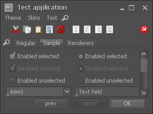 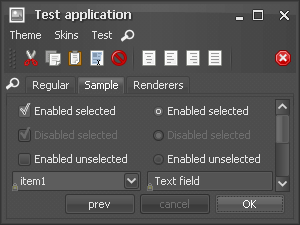The same application under release 4.2 and the new visuals for check marks and disabled controls:
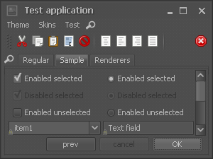 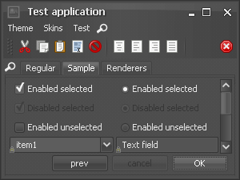Removing visual noise on tables
Cleaner and more streamlined appearance of tables (including tables wrapped in scroll panes). Here is a screenshot of scroll pane wrapping a table in release 4.1:

Non-native font rendering aside, there are quite a few problems:
- Even though the table grid is turned off, there are still white separator lines clearly visible on striped rows and especially on the selected row
- Too many lines on the table header - each cell has its own border
- Extra border to the right of the scroll bar results in additional visual noise
- The selection background doesn’t extend to the perceived table bounds on both sides
Here is the same table under release 4.2:

Auto-dispose of tab overview dialog
The tab
overview dialog is now automatically disposed when it loses focus. In addition, it
is disposed when the window of the originating tabbed pane is closed. This behavior can be
controlled by overriding the following new method in the
org.jvnet.lafwidget.tabbed.TabPreviewPainter class
(set using the
LafWidget.TABBED_PANE_PREVIEW_PAINTER
client property):
/**
* Returns indication whether the tab overview dialog should be
* automatically disposed when it loses focus.
*
* @return if <code>true</code>, the tab overview dialog will be disposed
* when it loses focus.
*/
public boolean toDisposeOverviewOnFocusLoss()